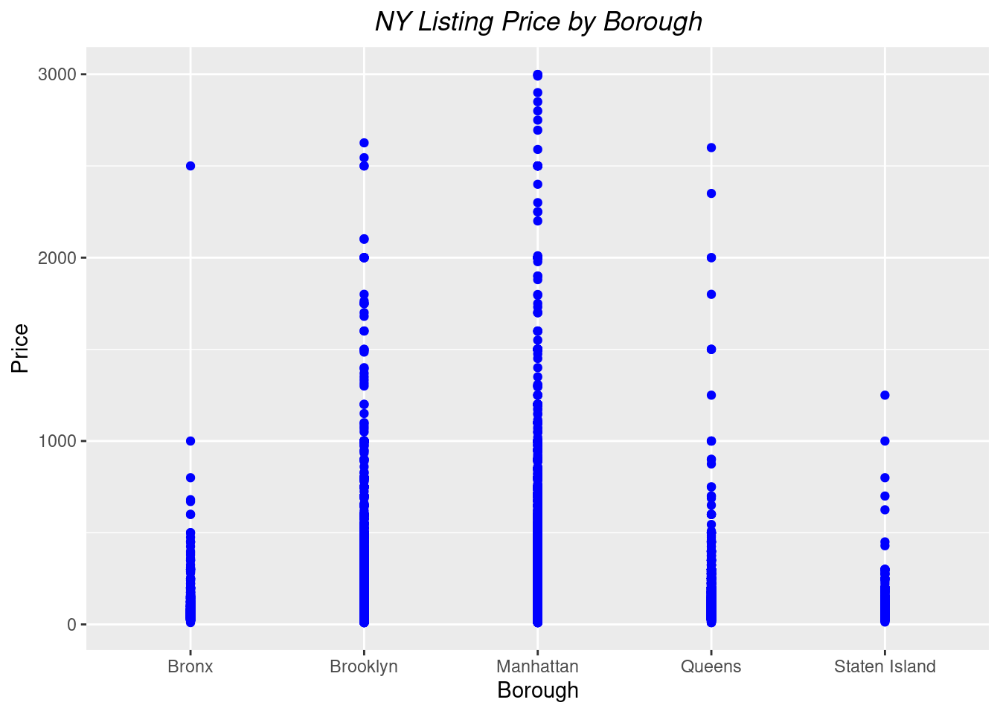
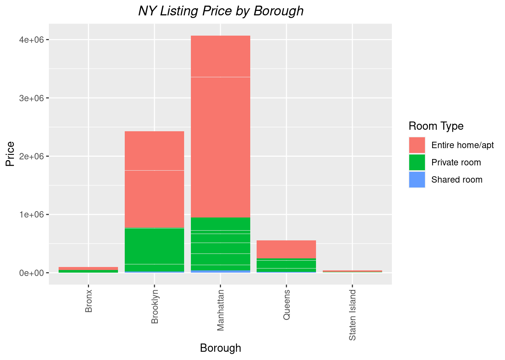
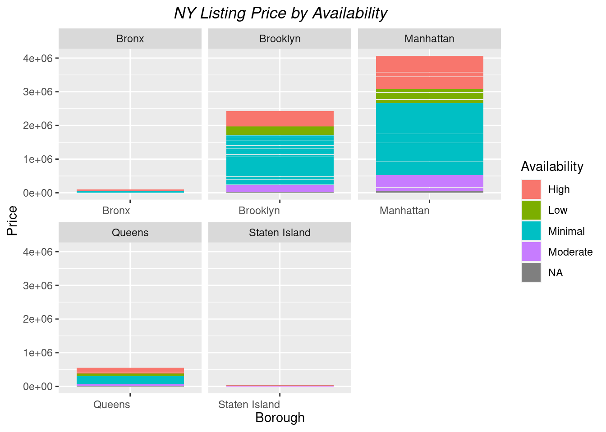

here() starts at /home/runner/work/601_Winter_2022-2023/601_Winter_2022-2023
library(ggplot2)library(summarytools)
Warning: no DISPLAY variable so Tk is not available
system might not have X11 capabilities; in case of errors when using dfSummary(), set st_options(use.x11 = FALSE)
Attaching package: 'summarytools'
The following object is masked from 'package:tibble':
view
library(shiny)library(ggmap)
ℹ Google's Terms of Service: <https://mapsplatform.google.com>
ℹ Please cite ggmap if you use it! Use `citation("ggmap")` for details.
Rows: 48895 Columns: 16
── Column specification ────────────────────────────────────────────────────────
Delimiter: ","
chr (5): name, host_name, neighbourhood_group, neighbourhood, room_type
dbl (10): id, host_id, latitude, longitude, price, minimum_nights, number_o...
date (1): last_review
ℹ Use `spec()` to retrieve the full column specification for this data.
ℹ Specify the column types or set `show_col_types = FALSE` to quiet this message.
Warning in png(png_loc <- tempfile(fileext = ".png"), width = 150 *
graph.magnif, : unable to open connection to X11 display ''
Warning in png(png_loc <- tempfile(fileext = ".png"), width = 150 *
graph.magnif, : unable to open connection to X11 display ''
Warning in png(png_loc <- tempfile(fileext = ".png"), width = 150 *
graph.magnif, : unable to open connection to X11 display ''
Warning in png(png_loc <- tempfile(fileext = ".png"), width = 150 *
graph.magnif, : unable to open connection to X11 display ''
Warning in png(png_loc <- tempfile(fileext = ".png"), width = 150 *
graph.magnif, : unable to open connection to X11 display ''
Warning in png(png_loc <- tempfile(fileext = ".png"), width = 150 *
graph.magnif, : unable to open connection to X11 display ''
Warning in png(png_loc <- tempfile(fileext = ".png"), width = 150 *
graph.magnif, : unable to open connection to X11 display ''
Warning in png(png_loc <- tempfile(fileext = ".png"), width = 150 *
graph.magnif, : unable to open connection to X11 display ''
Warning in png(png_loc <- tempfile(fileext = ".png"), width = 150 *
graph.magnif, : unable to open connection to X11 display ''
Warning in png(png_loc <- tempfile(fileext = ".png"), width = 150 *
graph.magnif, : unable to open connection to X11 display ''
Warning in png(png_loc <- tempfile(fileext = ".png"), width = 150 *
graph.magnif, : unable to open connection to X11 display ''
Warning in png(png_loc <- tempfile(fileext = ".png"), width = 150 *
graph.magnif, : unable to open connection to X11 display ''
Warning in png(png_loc <- tempfile(fileext = ".png"), width = 150 *
graph.magnif, : unable to open connection to X11 display ''
Data Frame Summary
listings
Dimensions: 48895 x 13
Duplicates: 0
Variable
Stats / Values
Freqs (% of Valid)
Graph
Missing
id
[numeric]
Mean (sd) : 19017143 (10983108)
min ≤ med ≤ max:
2539 ≤ 19677284 ≤ 36487245
IQR (CV) : 19680234 (0.6)
48895 distinct values
0
(0.0%)
name
[character]
1. Hillside Hotel
2. Home away from home
3. New york Multi-unit build
4. Brooklyn Apartment
5. Loft Suite @ The Box Hous
6. Private Room
7. Artsy Private BR in Fort
8. Private room
9. Beautiful Brooklyn Browns
10. Cozy Brooklyn Apartment
[ 47884 others ]
18
(
0.0%
)
17
(
0.0%
)
16
(
0.0%
)
12
(
0.0%
)
11
(
0.0%
)
11
(
0.0%
)
10
(
0.0%
)
10
(
0.0%
)
8
(
0.0%
)
8
(
0.0%
)
48758
(
99.8%
)
16
(0.0%)
borough
[character]
1. Bronx
2. Brooklyn
3. Manhattan
4. Queens
5. Staten Island
1091
(
2.2%
)
20104
(
41.1%
)
21661
(
44.3%
)
5666
(
11.6%
)
373
(
0.8%
)
0
(0.0%)
neighborhood
[character]
1. Williamsburg
2. Bedford-Stuyvesant
3. Harlem
4. Bushwick
5. Upper West Side
6. Hell's Kitchen
7. East Village
8. Upper East Side
9. Crown Heights
10. Midtown
[ 211 others ]
3920
(
8.0%
)
3714
(
7.6%
)
2658
(
5.4%
)
2465
(
5.0%
)
1971
(
4.0%
)
1958
(
4.0%
)
1853
(
3.8%
)
1798
(
3.7%
)
1564
(
3.2%
)
1545
(
3.2%
)
25449
(
52.0%
)
0
(0.0%)
latitude
[numeric]
Mean (sd) : 40.7 (0.1)
min ≤ med ≤ max:
40.5 ≤ 40.7 ≤ 40.9
IQR (CV) : 0.1 (0)
19048 distinct values
0
(0.0%)
longitude
[numeric]
Mean (sd) : -74 (0)
min ≤ med ≤ max:
-74.2 ≤ -74 ≤ -73.7
IQR (CV) : 0 (0)
14718 distinct values
0
(0.0%)
room_type
[character]
1. Entire home/apt
2. Private room
3. Shared room
25409
(
52.0%
)
22326
(
45.7%
)
1160
(
2.4%
)
0
(0.0%)
price
[numeric]
Mean (sd) : 152.7 (240.2)
min ≤ med ≤ max:
0 ≤ 106 ≤ 10000
IQR (CV) : 106 (1.6)
674 distinct values
0
(0.0%)
minimum_nights
[numeric]
Mean (sd) : 7 (20.5)
min ≤ med ≤ max:
1 ≤ 3 ≤ 1250
IQR (CV) : 4 (2.9)
109 distinct values
0
(0.0%)
number_of_reviews
[numeric]
Mean (sd) : 23.3 (44.6)
min ≤ med ≤ max:
0 ≤ 5 ≤ 629
IQR (CV) : 23 (1.9)
394 distinct values
0
(0.0%)
reviews_per_month
[numeric]
Mean (sd) : 1.4 (1.7)
min ≤ med ≤ max:
0 ≤ 0.7 ≤ 58.5
IQR (CV) : 1.8 (1.2)
937 distinct values
10052
(20.6%)
calculated_host_listings_count
[numeric]
Mean (sd) : 7.1 (33)
min ≤ med ≤ max:
1 ≤ 1 ≤ 327
IQR (CV) : 1 (4.6)
47 distinct values
0
(0.0%)
availability_365
[numeric]
Mean (sd) : 112.8 (131.6)
min ≤ med ≤ max:
0 ≤ 45 ≤ 365
IQR (CV) : 227 (1.2)
366 distinct values
0
(0.0%)
Generated by summarytools 1.0.1 (R version 4.2.2) 2023-01-30
The dataset contains listing information for Airbnb properties in New York. It has 48895 observances (listings) and 16 variables.
Clean the data
My next step is cleaning up the dataset. I first removed the variables that I consider unnecessary: host_id, host_name and last_review. I also renamed the variables neighbourhood_group to borough and neighbourhood to neighborhood since these are more commonly used terms in the US. My next step is to determine if there is there is any missing data from this dataset.
colSums(is.na(listings))
id name
0 16
borough neighborhood
0 0
latitude longitude
0 0
room_type price
0 0
minimum_nights number_of_reviews
0 0
reviews_per_month calculated_host_listings_count
10052 0
availability_365
0
There are 10052 missing data from the reviews_per_month column. I assume the information is missing because there are no reviews yet for those particular listings.
The first question I would like to answer is the price distribution per borough. More specifically, I’m interested in the relationship between borough and the price for the different types of rooms available.
Next, I would like to determine the most and least expensive listings by neighborhoods and see if the distribution is similar to the price distribution per borough.
By creating a proportional crosstabs for room_type and borough, I can determine that Manhattan has the most listings for entire home/apt with 27%, followed by Brooklyn with 19.5%. For private room, Brooklyn has the most listings with 21%. I can also determine from this crosstabs that there are is a small number of shared rooms compared to the other types of rooms and most of the shared rooms are in Manhattan. We can also notice that Staten Island has the least number of listings.
Visualizations
##Filter price for better visualizationborough_price<-listings%>%filter(price>0& price<3000)#Create a graph that represents price per borough ggplot(borough_price, aes(x = borough, y = price)) +geom_point(colour ="blue") +labs(title ="NY Listing Price by Borough", y ="Price", x ="Borough")+theme(plot.title =element_text(hjust=0.5, face ="italic"))

From this graph, we can determine that Manhattan and Brooklyn have the listings with the highest prices.
#Create a graph that represents price per borough and room typeggplot(borough_price, aes(x = borough, y = price, fill = room_type)) +geom_col() +labs(title ="NY Listing Price by Borough", y ="Price", x ="Borough")+theme(plot.title =element_text(hjust=0.5, face ="italic"), axis.text.x =element_text(angle =90, vjust =0.5, hjust =1))+scale_fill_discrete(name ="Room Type")

Not surprisingly, Manhattan has the highest price per listing and the highest distribution for room type.
#Create a graph that represents price and availabilityggplot(borough_price, aes(x = borough, y = price, fill = availability)) +geom_col() +labs(title ="NY Listing Price by Availability", y ="Price", x ="Borough")+theme(plot.title =element_text(hjust=0.5, face ="italic"), axis.text.x =element_text(vjust =0.5, hjust =1))+scale_fill_discrete(name ="Availability")+facet_wrap(vars(borough), scales ="free_x")

This graph represents the price for listings based on their availability. Manhattan has the highest prices per listing compared to other boroughs. Also, I can determine that the distribution for minimal available listings is larger in Brookyn and Manhattan than any of the other availability listings.
Lastly, I wanted to see where the listings are in a map. Since the number is so large, I filter to see only listings that are less than $1000.
map<-listings%>%filter(price>0& price<1000)qmplot(longitude, latitude, data = map, maptype ="toner-lite", color =I("blue"))+facet_wrap(vars(room_type))
ℹ Using `zoom = 11`
ℹ Map tiles by Stamen Design, under CC BY 3.0. Data by OpenStreetMap, under ODbL.